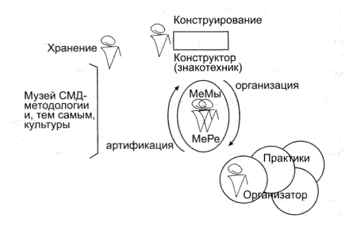

Ремесло методолога
Толчком для подготовки этого текста стали опубликованные в журналах «Вопросы методологии» и «Кентавр» высказывания многочисленных учеников и эпигонов, а также противников Георгия Петровича Щедровицкого, сделанные после его смерти. Я считаю себя принадлежащим сразу ко всем этим слоям нашего многоликого сообщества методологов, и хочу зафиксировать свое отношение к идеям, наработанным в Московском Методологическом Кружке (в том числе — и лично Г.П.), а также поспорить (в безличной манере) с иными точками зрения на этот предмет.
1. Методологическая позиция
Будет ли методология жить дальше в стиле ММК и Г.П. зависит не от того, как будет обозначено место для наследия ММК (и всех организованных Г.П. движений и подходов) в амбарах мировой и европейской культуры, а от тех, кто сможет и захочет воспроизводить и транслировать методологическую позицию. Занять эту позицию, внезапно оказавшуюся пустой, может лишь уникальный self-made man с невероятной волей, особым опытом жизненных ситуаций и форм подготовки, постоянно развертывающий и аккумулирующий техники мысли и действия. Второго Методолога, на мой взгляд, никогда не будет.
Но можно попробовать обозначить наиболее важные характеристики собственно методологической позиции, а если хорошо поработать, то и сыграть или сценировать в рамках оргдеятельностной игры (или в более широких рамках — например, рамках целой жизни) эту методологическую позицию — командой, а иногда даже индивидуально. Я почти пятнадцать лет наблюдал и анализировал работу Г.П., стремился скопировать способы его мысли и действия и все это время параллельно выстраивал свою собственную линию работ, в последние годы все чаще действуя против Учителя. Наверное, в молодые годы Г.П. был и сильнее физически, и здоровее, но что касается силы духа и интеллектуальной мощи, то они прирастали в нем до последнего тяжелого недуга. И поэтому с моей стороны это была честная игра, поскольку каждая сложная ситуация обсуждалась с ним, анализировалась, и тем самым накапливался опыт для организации следующих работ и столкновений.

Что же собой представляет такая вещь, как методологическая позиция? На схеме в центре изображена раздвоенная (или сдвоенная) фигурка, левой части которой приписывается методологическое мышление, а правой — методологическая рефлексия. Такое рисование указывает для рефлексии форму организации, а для мышления — материал, в котором оно может осуществляться.
(Рисование на схемах фигурок-позиционеров означает простую здравосмысленную процедуру — различение разных способов мысли и действия и их отчуждение от размышляющего у доски или пишущего текст.)
Методологическая позиция (господа, оставьте ваши аналогии с неразрезанными сиамскими близнецами) действует в пространстве, организованном в структуре из трех мест.
В нижнем правом углу обозначено место практик. Это означает, что обсуждаемая позиция не может быть оторвана от определенного вида практики, а деятельность, не имеющая пристроенной или надстроенной методологической позиции, практикой, в свою очередь, быть названа не может. В истории методологии на месте практик побывали: логика, психология, педагогика, лингвистика, семиотика, проектирование, оргуправление, финансы, автомобильный рэкет и много всего разного (лично для меня первой практикой сегодня является соорганизованный учебный план в локальных образовательных системах, но об этом — в других публикациях). Методологическая позиция есть неотъемлемая компонента любой и всякой практики, а практика может складываться только при условии активной эксплуатации методологической позиции. Берите любой пример на выбор: научные предметы, архитектура, педагогика…
Нововведение в любой сфере мыследеятельности появляется вследствие методологической работы и мыслительного конструирования, новой схемы идеального объекта. Это место обозначено в верхнем углу нашей схемы.
Здесь уместен вопрос: а бывают ли неметодологическая рефлексия и неметодологическое мышление? Да, конечно. Рефлексия может оформляться и в схемах интроспекции, и в социально-коммунальных схемах. Бывают такие вещи как «рефлексивная свечка» (возгонка) и много других рефлексивных чудес. Методолог хоть и верит иногда в чудеса, но рефлексию стремится оформлять мыслительно-конструктивно. Но и конструктивная работа мысли может развертываться не в материале рефлексии, а, например, в материале знаковых форм (чистое мышление). Как тренировочное упражнение — это полезно и здорово, а иногда при этом удается сотворить что-нибудь невиданное-новое (где бы только этой конструкции найти затем рефлексию, чтобы под себя подмять?).
Методологическая рефлексия работает по принципу прихватывания определенной формы: категорий, план-карт работ, понятий и других логически и пространственно проработанных схем. Поставщиком-снабженцем этих форм-схем выступают методологическое мышление, а также музей системомыследеятельностной методологии (на схеме — слева внизу). Ну, а если принять утверждение (которое представляется весьма правдоподобным), что корпус постоянно пополняемых представлений, идей СМД-методологии есть особая упаковка материала культуры, то можно говорить о его изоморфности миру содержания (по К.Попперу) или миру идей (по Платону).
Со схемы можно снять три принципа самоорганизации методологической позиции:
— принцип инструментализма и практичности;
— принцип конструктивно-мыслительного развертывания (творения новых знаков, схем мыслеформ);
— принцип заимствования и преодоления определенной культурно-нормированной формы.
На схеме не обозначено, но может домысливаться за ней (как своего рода фон или подмалевок), место ММК и СМД-движения — среда и почва произрастания методологической позиции и всех оснащающих ее идей, средств, представлений. Но СМД-движения больше не существует, а на его обломках вырастает наряду с методологической позицией много разного: конгрессы, фестивали, форумы, Академии, Ассоциации, Сети и ремесленные училища. По обломкам бродят бывшие методологи, пытающиеся за кусок хлеба с кетчупом заложить свое прошлое в философских, педагогических, психологических, культурологических, социологических и других ломбардах-НИИ.
2. Методологическая формация мышления
Методологическое мышление, функционально и организационно-практически связанное с методологической рефлексией, претендует на аккумуляцию, систематизацию и регулярное употребление всех исторически сложившихся форм человеческой мысли — мифологических, философских, конструктивно-технических, научных, инженерных, проектных, оргуправленческих и т.д. и т.п.
Такая ориентация была рефлексивно обозначена в ММК еще в 70-е годы, а затем активно прорабатывалось Г. П. Щедровицким и его учениками в ОД-играх. В частности, было выдвинуто представление о «сфере мыследеятельности» — нерасчлененной соцелостности всех форм мыследействия (включая, разумеется, методологическую). Сама постановка подобного ориентира и технического задания на такие исследования и разработки стала возможной после, во-первых, разоформления (распредмечивания) культурных норм мыслительной работы, а во-вторых, опыта разнообразных действий в различных областях практики, в профессиях и социально-культурных группах.
Основная особенность методологического мышления заключается в том, что оно неразрывно связано с методологической рефлексией, что по сути дела обозначает запрет (или невозможность) на морфологизацию методологической мысли в социальных институтах и других организованностях, имеющих цикл жизни. Проще говоря, методологическая позиция не может быть оформлена и социально закреплена как научный предмет, социальный институт, профессия или сфера деятельности. Попытка такого оформления будет означать ее смерть. (См. материалы дискуссии 1974 г. в ММК на тему «Профессионализация и социализация методологии»). Единственная из известных приемлемых форм для обозначения такого феномена — формация мышления (поиск более адекватной формы — дело истории).
Что есть методологическая формация мышления? Уже Аристотель попытался выделить самые общие формы организации мысли — категории. Эту же работу осуществлял И. Кант и другие мыслители. В ММК разработана категория система как снимающая и организующая все другие категории. Мало кто обращает внимание на этот «сухой остаток» СМД-движения, но именно эта разработка позволяет методологическому мышлению покинуть материнское лоно философии и складывать новые практики непосредственно вокруг категориальных форм мысли. И это есть характерная черта методологической формации мышления, отличающая ее от философской, научной, религиозной и других (если имеет смысл о них вспоминать).
Методологическая мысль лишена и социально-коммунальных покровов, и трепета перед посвящением. Мы говорим: хочешь быть грамотным и ситуативно точным практиком в любом деле — осваивай методологическую позицию, а иначе будешь биороботом, действующим по вложенной программе. А если хочешь быть грамотным и ситуативно точным методологом — осваивай способ практического действия профессионалов, иначе будешь тем же биороботом.
Получается, что тот, кто хочет осваиваться в методологической позиции должен быть асоциальным. Он похож на одинокого рейнджера на Диком Западе и обязан самостоятельно следить за порядком на отведенных ему мыслительных территориях. А работы ему всегда хватит, ибо на захват и разграбление этих территорий претендуют сегодня и будут всегда претендовать те, на кого «сели схемы» методологической рефлексии. Эти люди в силу естественных человеческих слабостей понимают, что жизнь наша коротка и нужно успеть прорваться к кормушкам, где дают хлеб с кетчупом (на госслужбе или в академических НИИ) и где требуется ежедневно доказывать свою добропорядочность и лояльность.
Получается, что занятие методологией есть практическое искусство и попадает под общее понятие «ремесло». Искусство методолога-ремесленника не может быть вписано в рамки профессионализма, ибо он постоянно меняет себя — меняет, не только двигаясь в мысли по разным рабочим позициям, но и откладывая на себе все новые техники понимания, размышления и действования. Если и ставить задачу подготовки методологов, то открывать для этого Методолог может только ремесленное училище (сам Г.П. готовил учеников по формам, схожим с итальянской «боттегой» эпохи Возрождения).
Получается, что между мышлением, которое творит новые схемы, и рефлексией, которая надстроена над практикой (выступает для мыслящего в функции исполнительской машины), постоянно существует конфликт. Мышление может двигаться в своем пространстве свободно относительно рефлексии. Как говорится в русских сказках: самое быстрое на свете — это мысль, и намыслить можно много чего разного. А вот у рефлексии, привязанной к практике, всегда есть конкретная ситуация, ресурсы, люди (которых нельзя просто уволить и еще труднее подготовить), и она может из всего того, что намыслило хулиганствующее от избыточности своих возможностей мышление, употребить очень маленькие фрагменты и в очень длинное время.
Можно при этом обсуждать автономизацию методологического мышления (и многие бывшие методологи уже это сделали), но попытки такого рода известны из истории математики, философии, логики. Формировавшиеся сообщества конструктивно работающих чистых мыслителей окукливались и начинали заниматься трансляцией и воспроизводством. Но это обеспечивают прежде всего сохранение соответствующего сообщества и нормальное существование людей в деятельности: в этих условиях можно попасть на определенное рабочее место, прожить долгую обеспеченную жизнь, выйти на пенсию и спокойно умереть. Но мысли уже не будет, поскольку в условиях воспроизводства и трансляции ее не может быть никогда.
Деятельность должна воспроизводиться, и это создает нормальные условия для существования людей. А к мышлению требования принципиально иные. Оно может иногда случаться в ситуации как результат усилий специально подготовленных людей. Оно случается, вспыхивает, но не транслируется и не воспроизводится, а развертывается в схемах (понятий, план-карт организации действия, систем знания…). Если методолог работает в педагогике, в системах управления или в проектировании, то говорить о его обособленности и автономности нельзя. Но если он работает как методолог, то он не может мыслить и действовать по нормам, принятым в данном сообществе. Он обязательно будет выскочкой и «enfante terrible».
3. Нравственные регулятивы методологической позиции
Для Аристотеля нравственным регулятивом (ценностной ориентацией, этической нормой) была идея Блага, для Ф. Бэкона — идея Природы, согласно законам которой нужно жить и действовать; для большинства людей таким регулятивом является идея Бога.
Методологическая позиция требует от стремящихся занять ее выполнения особых норм нравственного действия, которые соблазнительно счесть и общечеловеческими: публичность, открытость для критики и разборки, демонстративность (закрепление сказанного в схеме), коммуникация (учет форм понимания слушателей и оппонентов). Есть и технические требования к организации работ: осознание и проверка в мыслительной имитации последствий возможных высказываний и действий, учет в ситуации интересов ближайшего окружения и планов совместного продолжения работ.
Методологическая рефлексия и мышление в связке обеспечивают два принципиально разных процесса (см. нашу схему). Один из них — от мышления к рефлексии — называется организация, второй — от рефлексии к мышлению — артификация («об-искусствление»).
Организация есть употребление сконструированных мыслеформ как план-карт для перестройки систем деятельности и разных форм социальной организации. Конструкция понятия должна быть положена в практику как оргпроект (оргдеятельностная схема) и тем самым сотворить новые структуры функционирования (учебный план, финансовый институт, экспериментальную площадку и т.д.). Извне можно назвать этот процесс захватом мыслеформами материала деятельности и людей.
Артификация есть движение от рефлексии ситуаций целевой практической деятельности к пополнению арсенала мыслеформ экстрагированным опытом ошибок. Извне это есть обискусствление и перевод в инструментальную функцию того, что складывается естественным образом в ходе реализации наших оргпроектов.
У читателя с научным мировоззрением уже наверняка возник вопрос о критериях ошибочности и правильности и о соответствующих аналитических средствах. Ответ прост, хотя и не тривиален: всякое действие по реализации наших оргпроектов должно рассматриваться как ошибочное и анализироваться в этой ориентации. При этом сознание получит возможность бодрствовать, а аналитик сможет постоянно проверять свой аналитический арсенал и увеличивать его различительную мощь.
Методологическая позиция постоянно организует и артифицирует опыт ошибок и в этом состоит ее культурная миссия и социальное назначение.
Получается, что если следовать этим нравственным регулятивам, то со стороны, для представителей других формаций мышления, методолог будет всегда выглядеть экспансионистом, имеющим таким образом организованную волю и такой образ жизни, которые затрудняют (а иногда делают и невозможной) его «нормальную» жизнь в «нормальной» организации. Как им объяснить, что у него тоже нормы есть, правда, иные?…
4. Цели методологической позиции
Так получилось, что результатом работы и жизни людей, прошедших через ММК, стала методологическая позиция — они ее придумали, сложили и начали эксплуатировать. И если эта система организации работ кого-либо втянет (лично я всячески буду этому препятствовать и предостерегать неосторожных неофитов), то цели у него появятся естественно.
Они известны и прочитываются на нашей схеме. Это — организация осмысленных практик. Это — развертывание арсенала мыслеформ (знакотехническая работа). Это — выделение, накопление и хранение единиц опыта методологической работы. Методологическая позиция имеет цели сама в себе. Независимо от того, что происходит в стране и в мире.
 All rights reversed
All rights reversed
Исполнение — Артём Резников